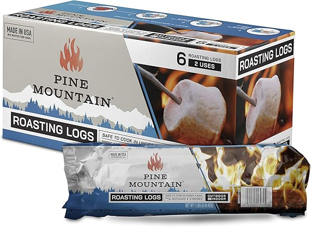
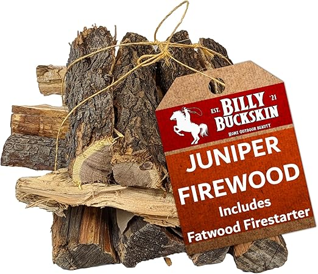
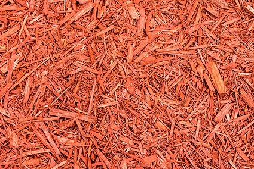
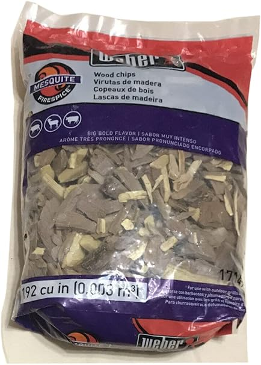

← moabwood.com
Moabwood Explained: 2026 Edition
May 2026
moabwood isn't one-size-fits-all. What's perfect for one buyer can miss the mark for another. Here's how to figure out what fits you.
Practical Advice
- Set price alerts on your top picks. moabwood prices can drop 30-40% without warning.
- Amazon's return policy removes most of the risk when buying moabwood you haven't seen in person.
Lessons from Real Buyers
- Not measuring — "It looked bigger online" is the #1 return reason for moabwood. Measure twice.
- Skipping negative reviews — A 4.5-star product with durability complaints tells you more than a 5-star product with 8 reviews.
- Blind brand loyalty — Your favorite brand might not make the best moabwood. Stay open to better options.
- Trusting fake reviews — Look for reviews with photos and specific details. Generic praise is often planted.
Worth Your Money

→ #1 — Old Potter Kiln Dried Firewood 1.5 Cu Ft 38-45 lbs Solo Stove Firepits Oak — Editor's pick

→ #3 — Firewood Central Kiln-Dried PA Cherry 16in Splits 38 lb Sweet Smoking Wood — Top rated

→ #2 — Old Potters Kiln Dried Firewood Cherry 1100 Cu in 16-18 Logs 8 x 2.5 Logs — Top rated

→ #5 — Old Potter Kiln Dried Firewood 1.5 Cu Ft 38-45 lbs Firepits Cooking Wood — Editor's pick

→ #4 — Old Potters Kiln Dried Firewood Oak 1100 Cu in 16-18 Logs 8 x 2.5 Logs — Highly reviewed
Last Word
Our comparison tables on moabwood.com break down options by price, features, and ratings. Start there.
Affiliate Disclosure: As an Amazon Associate, we earn from qualifying purchases. This doesn't affect our recommendations.